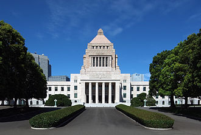
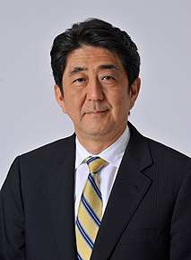
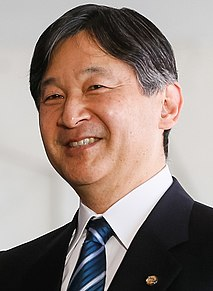

Japan is a constitutional monarchy and sovereign state whereby the power of the Emperor is very limited. As a ceremonial figurehead, he is defined by the constitution to be "the symbol of the State and of the unity of the people". Executive power is wielded chiefly by the Prime Minister and his cabinet, while sovereignty is vested in the Japanese people.[111] The Constitution of Japan is the oldest unamended constitution in the world. It has not changed since its adoption on 3 May 1947.

Japan's legislative body is the National Diet, seated in Chiyoda, Tokyo. The Diet is a bicameral body, comprising the lower House of Representatives with 465 seats, elected by popular vote every four years or when dissolved; and the upper House of Councillors with 242 seats, whose popularly elected members serve six-year terms. There is universal suffrage for adults over 18 years of age,[113] with a secret ballot for all elected offices.[111] The Diet is currently dominated by the conservative Liberal Democratic Party (LDP), with the largest opposition party being the social-liberal Constitutional Democratic Party (CDP). The LDP has enjoyed near-continuous electoral success since 1955, except for brief periods between 1993 and 1994 and from 2009 to 2012. As of July 2019, it holds 285 seats in the lower house and 113 seats in the upper house.


The Prime Minister of Japan is the head of government and is appointed by the Emperor after being designated by the Diet from among its members. The Prime Minister is the head of the Cabinet, and appoints and dismisses the Ministers of State. Following the LDP's landslide victory in the 2012 general election, Shinzō Abe replaced Yoshihiko Noda as the Prime Minister on December 26,2012.
Historically influenced by Chinese law, the Japanese legal system developed independently during the Edo period through texts such as Kujikata Osadamegaki.[115] However, since the late 19th century the judicial system has been largely based on the civil law of Europe, notably Germany. For example, in 1896, the Japanese government established a civil code based on a draft of the German Bürgerliches Gesetzbuch; with the code remaining in effect with post–World War II modifications.[116] Statutory law originates in Japan's legislature and has the rubber stamp of the Emperor. Japan's court system is divided into four basic tiers: the Supreme Court and three levels of lower courts.[117] The main body of Japanese statutory law is called the Six Codes.